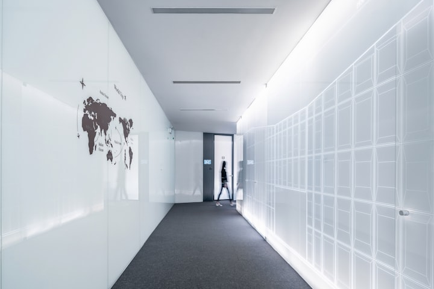

Product Details Demo
Product Landing Page: Showcase with Precision and Passion!
Step-by-step guide to designing a Landing Page that highlights every facet of your product or service.

Overview
What it is, who it is for, what you need
Three questions, answered first
A visitor comparing products wants the summary before the detail. Answer what, who and what-do-I-need in the first screen after the hero; the specifications can wait.What it is
A free, open-source website template for Astro and Tailwind CSS: pages, widgets, a blog, SEO and image optimisation, ready to customise.
Who it is for
Developers and small teams who want a fast, well-structured site without designing every section from scratch: startups, SaaS, portfolios, marketing sites, blogs.
What you need
Node.js 22.22 or newer, a code editor and about ten minutes. No account, no licence key.

Key features
What it does, in the buyer’s terms
Pick a feature to see it. Each tab is described by the outcome it produces; the full list lives in the specifications below.

Specifications
Exactly what you get
Specs are where trust is won
The buyer who reads this far is deciding. Give them the exact versions, sizes, requirements and contents, in a list they can scan and compare.Framework
Astro 7.x with the static output; adapters can be added for on-demand pages.
Styling
Tailwind CSS 4 with CSS-first configuration and shadcn/ui-compatible design tokens.
Language and tooling
TypeScript, ESLint and Prettier configured; npm run check runs all three.
Content
Markdown and MDX blog posts with a typed schema; six demo posts included.
Pages
4 home page demos, 6 landing page demos, about, services, pricing, contact, 404, terms and privacy.
Requirements
Node.js 22.22 or newer. Deploys to any static host; Dockerfile with nginx included.

Gallery
Show it from every angle
Buyers zoom in. Six to eight real images, each with a caption that says what they are looking at, answer more questions than a paragraph. Click any image to open it.
Specifications, laid out The team working with the template Everyday setup Planning a release Roadmap session Design in progress
Getting started
From download to a running site in three steps
A product page should show the first minutes of ownership. Fewer surprises after the purchase, fewer returns.
Create the project
Run npm create astro@latest -- --template arthelokyo/astrowind, then npm install and npm run dev.
Make it yours
Set name, URL and metadata in src/config.yaml; colours and fonts in CustomStyles.astro; replace the logo.
Build and deploy
npm run build produces a static dist/ folder for Vercel, Netlify, Cloudflare, GitHub Pages or your own server.
Rules of thumb
Constraints that keep a product page honest
Limits, not results. The numbers about the product itself are in the specifications above.
One product per page
A page that sells two things sells neither. Variants are fine; alternatives are not.
Three depths
Overview, features, specifications. Each answers the questions of a more decided buyer.
The product in use
At least one real image of it being used, not only rendered. Buyers trust context.
The price, on the page
A product page without a price sends the buyer to search for it elsewhere. State it.
Proof
What owners say goes here
Placeholders on purpose. On a product page, quotes should mention concrete use: what was built, how long it took, what surprised them.
A quote naming what the customer built with the product and how long it took them.
Customer name
Role, company (sample testimonial)
A quote about a specification that mattered: a requirement met, a limit that was not a problem.
Customer name
Role, company (sample testimonial)
A short one comparing it with the alternative the customer considered.
Customer name
Role, company (sample testimonial)
FAQ
Questions buyers ask about a product page
Answered here so nobody has to write in. The same answers feed a FAQ rich result in search.
What is a product details landing page?
A page dedicated to one product or service, structured in layers: a one-line summary, the main benefits, the full specifications, and everything a buyer needs to decide (price, availability, proof, common questions). It replaces the back-and-forth of a sales conversation.
How is it different from a sales page or a click-through page?
A sales page argues; a click-through page bridges; a product page informs. Its visitor already wants this kind of thing and is comparing. Completeness and clarity convert here, not persuasion.
How much detail is too much?
None, if it is organised by depth. Keep the top of the page skimmable (overview and key features) and let the specifications carry the detail further down. Nobody leaves because a spec table is long; they leave because the first screen is vague.
Where do price and availability go?
Near the top for known products, after the features for new ones. Either way, state them plainly on the page itself; a “contact us for pricing” is a form in disguise and costs conversions.
What kind of images does a product page need?
At least one of the product in use, not only the product on white. Screenshots for software, context shots for physical goods, and a short demo video if the product moves.
How do I adapt this page with AstroWind?
Every block is a widget from src/components/widgets (Hero, Content, Features, Steps2, Stats, Testimonials, FAQs, CallToAction). Replace the copy and images, keep the three depths, and point the buttons at your store or checkout.
Get the product this page describes
This page is part of the free AstroWind template: Astro + Tailwind CSS, every block a reusable widget. Download it, replace the product, keep the three depths.